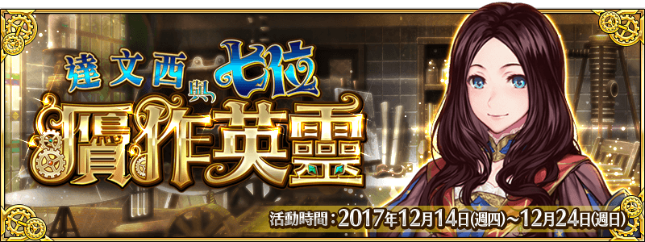

本頁面資訊僅供參考，實際情況請以遊戲內資料為準。
由於直接使用官方翻譯，可能會與其他站內翻譯相異，敬請見諒。
其他公告內容請參照日版當時公告翻譯。
- 主線關卡
-
序章「麗莎．喬宮多的優雅假日」 消耗AP 推薦Lv. 初次報酬 開放條件 5 15 12/14 13:00~12/24 12:59
通過：龍之魔女〉 職階傾向 QP Exp 絆 
1,900 550 165 Wave 1 1  Lv.28 凱撒 HP31,584
Lv.28 凱撒 HP31,5842  Lv.30 帕拉塞爾斯 HP22,428
Lv.30 帕拉塞爾斯 HP22,428掉落總合機率
(可能掉落箱數)100%(1) 100%(1) 第一節 贗作「清純少年」 消耗AP 推薦Lv. 初次報酬 開放條件 5 15 12/14 13:00~12/24 12:59
通過：序章「麗莎．喬宮多的優雅假日」〉〉 職階傾向 QP Exp 絆 1,900 550 165 Wave 1 1  Lv.12 骸骨兵（偽） HP3,027
Lv.12 骸骨兵（偽） HP3,0272 Lv.12 骸骨兵（偽） HP3,027Wave 2 1 Lv.15 骸骨兵（真） HP5,4402  Lv.20 骸骨兵（偽） HP6,735
Lv.20 骸骨兵（偽） HP6,7353 Lv.25 骸骨兵（偽） HP10,958Wave 3 1 Lv.30 骸骨兵（真） HP12,8982 Lv.30 骸骨兵（偽） HP23,264掉落總合機率
(可能掉落箱數)55200%(2) 500%(5) 〉〉 職階傾向 QP Exp 絆 1,900 550 165 Wave 1 1 Lv.15 骸骨兵（真） HP5,2782 Lv.15 骸骨兵（偽） HP7,038Wave 2 1 Lv.30 骸骨兵（偽） HP9,9702 Lv.30 亞歷山大（偽） HP33,9753 Lv.30 骸骨兵（真） HP9,970掉落總合機率
(可能掉落箱數)55100%(1) 200%(2) 200%(2) 第二節 贗作「時髦紳士大叔」 消耗AP 推薦Lv. 初次報酬 開放條件 5 20 12/15 0:00~12/24 12:59
通過：第一節 贗作「清純少年」〉〉 職階傾向 QP Exp 絆 2,400 955 215 Wave 1 1 Lv.15 狼人（偽） HP3,3432 Lv.15 狼人（偽） HP3,3433  Lv.15 狼人（真） HP4,593
Lv.15 狼人（真） HP4,593Wave 2 1  Lv.18 狼人（真） HP4,401
Lv.18 狼人（真） HP4,4012  Lv.18 狼人（偽） HP4,055
Lv.18 狼人（偽） HP4,055Wave 3 1 Lv.30 人工生命體（偽） HP44,9222 Lv.22 人工生命體（真） HP13,3643 Lv.22 人工生命體（真） HP13,364掉落總合機率
(可能掉落箱數)55400%(4) 400%(4) 〉〉 職階傾向 QP Exp 絆 2,400 955 215 Wave 1 1 Lv.20 狼人（真） HP6,0182 Lv.20 狼人（偽） HP4,2643 Lv.20 狼人（偽） HP4,439Wave 2 1 Lv.25 人工生命體（偽） HP12,0722  Lv.32 赫克特（偽） HP55,910
Lv.32 赫克特（偽） HP55,9103 Lv.25 人工生命體（偽） HP12,072掉落總合機率
(可能掉落箱數)55100%(1) 100%(1) 400%(4) 第三節 贗作「謙虛的最強屠龍者」 消耗AP 推薦Lv. 初次報酬 開放條件 5 25 12/16 0:00~12/24 12:59
通過：第二節 贗作「時髦紳士大叔」〉 職階傾向 QP Exp 絆 2,900 1,385 265 Wave 1 1  Lv.21 狼人（偽） HP6,496
Lv.21 狼人（偽） HP6,4962 Lv.21 狼人（偽） HP6,906Wave 2 1  Lv.28 巨大悔恨 HP12,531
Lv.28 巨大悔恨 HP12,5312  Lv.35 齊格飛（偽） HP93,028
Lv.35 齊格飛（偽） HP93,0283 Lv.24 哥布林薩滿 HP11,044掉落總合機率
(可能掉落箱數)55100%(1) 200%(2) 200%(2) 第四節 贗作「文理科的型男們」 消耗AP 推薦Lv. 初次報酬 開放條件 5 30 12/17 0:00~12/24 12:59
通過：第三節 贗作「謙虛的最強屠龍者」〉 職階傾向 QP Exp 絆 3,400 2,190 315 Wave 1 1  Lv.23 阿周那（偽） HP58,344
Lv.23 阿周那（偽） HP58,3442  Lv.40 阿拉什（偽） HP83,040
Lv.40 阿拉什（偽） HP83,040掉落總合機率
(可能掉落箱數)100%(1) 100%(1) 第五節 贗作「煩惱愛女叛逆期的父親」 消耗AP 推薦Lv. 初次報酬 開放條件 5 35 12/18 0:00~12/24 12:59
通過：第四節 贗作「文理科的型男們」〉〉 職階傾向 QP Exp 絆 3,900 3,815 365 Wave 1 1 Lv.35 只差一步獎 HP29,7452  Lv.35 遺憾獎 HP30,216
Lv.35 遺憾獎 HP30,216Wave 2 1  Lv.65 參與獎 HP50,358
Lv.65 參與獎 HP50,3582  Lv.60 銅獎 HP64,530
Lv.60 銅獎 HP64,530掉落總合機率
(可能掉落箱數)100%(1) 100%(1) 100%(1) 100%(1) 〉〉 職階傾向 QP Exp 絆 3,900 3,815 365 Wave 1 1 Lv.26 自動人偶（真） HP36,4802 Lv.50 吉爾（偽） HP105,7423 Lv.26 自動人偶（偽） HP36,480掉落總合機率
(可能掉落箱數)55100%(1) 100%(1) 100%(1) 第六節 贗作「邁向後天的女武神」 消耗AP 推薦Lv. 初次報酬 開放條件 5 40 12/19 0:00~12/24 12:59
通過：第五節 贗作「煩惱愛女叛逆期的父親」〉 職階傾向 QP Exp 絆 4,400 5,690 415 Wave 1 1  Lv.35 布倫希爾德（偽） HP97,994
Lv.35 布倫希爾德（偽） HP97,9942  Lv.38 貞德．Alter HP97,965
Lv.38 貞德．Alter HP97,965掉落總合機率
(可能掉落箱數)2100%(1) 100%(1) 最終節 贗作「與真品背道而馳的復仇者」 消耗AP 推薦Lv. 初次報酬 開放條件 5 45 12/20 0:00~12/24 12:59
通過：第六節 贗作「邁向後天的女武神」〉 職階傾向 QP Exp 絆 4,900 7,815 465 Wave 1 1 Lv.35 雙足飛龍（真） HP5,4362 Lv.40 雙足飛龍（真） HP12,3693 Lv.35 雙足飛龍（真） HP5,436Wave 2 1 Lv.50 雙足飛龍（真） HP30,7872 Lv.45 貞德．Alter HP136,4403 Lv.50 雙足飛龍（真） HP30,787掉落總合機率
(可能掉落箱數)25100%(1) 500%(5) - 贗作探索
-
贗作探索 初級 消耗AP 推薦Lv. 初次報酬 開放條件 10 20 12/14 13:00~12/24 12:59
通過：第一節 贗作「清純少年」∞ 職階傾向 QP Exp 絆 2,400 955 215 Wave 1 1 Lv.15 羅馬士兵（真） HP5,454 Lv.13 羅馬士兵（偽） HP5,4852 Lv.15 羅馬士兵（真） HP5,454 Lv.13 羅馬士兵（偽） HP5,4853  Lv.15 羅馬士兵（真） HP5,508 Lv.13 羅馬士兵（偽） HP5,540
Lv.15 羅馬士兵（真） HP5,508 Lv.13 羅馬士兵（偽） HP5,540Wave 2 1 Lv.25 羅馬士兵（真） HP13,885 Lv.22 羅馬士兵（偽） HP12,6172 Lv.21 羅馬士兵（真） HP9,304 Lv.18 羅馬士兵（偽） HP8,6143 Lv.21 羅馬士兵（真） HP9,304 Lv.18 羅馬士兵（偽） HP8,614Wave 3 1 Lv.40 傑基爾（真） HP71,564 Lv.30 傑基爾（偽） HP70,950掉落總合機率
(可能掉落箱數)22212%(12) 5%(1) 5%(1) 0.1%(2) 300%(12) 50%(1) 50%(1) 贗作探索 中級 消耗AP 推薦Lv. 初次報酬 開放條件 20 30 12/14 13:00~12/24 12:59
通過：第一節 贗作「清純少年」
通過：贗作探索 初級∞ 職階傾向 QP Exp 絆 
3,400 2,190 315 Wave 1 1  Lv.16 龍牙兵（真） HP4,733 Lv.16 龍牙兵（偽） HP4,733
Lv.16 龍牙兵（真） HP4,733 Lv.16 龍牙兵（偽） HP4,7332 Lv.16 龍牙兵（真） HP6,626 Lv.16 龍牙兵（偽） HP6,6263 Lv.18 龍牙兵（真） HP9,224 Lv.18 龍牙兵（偽） HP9,224Wave 2 1 Lv.25 龍牙兵（真） HP9,839 Lv.25 龍牙兵（偽） HP9,8392 Lv.22 龍牙兵（真） HP7,704 Lv.22 龍牙兵（偽） HP7,7043 Lv.25 龍牙兵（真） HP9,839 Lv.25 龍牙兵（偽） HP9,839Wave 3 1 Lv.30 龍牙兵（真） HP21,351 Lv.30 龍牙兵（偽） HP21,3512 Lv.40 美狄亞（真） HP107,460 Lv.55 美狄亞（偽） HP101,496掉落總合機率
(可能掉落箱數)23314%(14) 6%(1) 6%(1) 0.2%(2) 420%(14) 70%(7) 50%(1) 70%(7) 50%(1) 贗作探索 上級 消耗AP 推薦Lv. 初次報酬 開放條件 30 40 12/14 13:00~12/24 12:59
通過：第一節 贗作「清純少年」
通過：贗作探索 中級∞ 職階傾向 QP Exp 絆 4,400 5,690 415 Wave 1 1 Lv.30 混沌機械兵（真） HP6,883 Lv.30 混沌機械兵（偽） HP6,6782  Lv.25 混沌機械兵（真） HP12,477 Lv.25 混沌機械兵（偽） HP12,107
Lv.25 混沌機械兵（真） HP12,477 Lv.25 混沌機械兵（偽） HP12,1073 Lv.30 混沌機械兵（真） HP6,883 Lv.30 混沌機械兵（偽） HP6,678Wave 2 1 Lv.24 混沌機械兵（真） HP7,731 Lv.24 混沌機械兵（偽） HP7,5012 Lv.35 混沌機械兵（真） HP11,439 Lv.35 混沌機械兵（偽） HP11,0993 Lv.24 混沌機械兵（真） HP7,731 Lv.24 混沌機械兵（偽） HP7,501Wave 3 1 Lv.35 混沌機械兵（真） HP28,069 Lv.35 混沌機械兵（偽） HP27,2352 Lv.66 子吉爾（真） HP145,422 Lv.40 子吉爾（偽） HP147,920
Lv.40 子吉爾（偽） HP147,9203 Lv.35 混沌機械兵（真） HP28,069 Lv.35 混沌機械兵（偽） HP27,235掉落總合機率
(可能掉落箱數)222242420%(16) 7.5%(1) 7.5%(1) 0.4%(2) 160%(16) 160%(16) 160%(16) 80%(8) 50%(1) 80%(8) 50%(1) 贗作探索 偽美術館巡禮 ～舊宮～ 消耗AP 推薦Lv. 初次報酬 開放條件 40 50 312/14 13:00~12/24 12:59
通過：第一節 贗作「清純少年」
通過：贗作探索 上級∞ 職階傾向 QP Exp 絆 
5,400 10,190 515 Wave 1 1 Lv.30 魔偶（真） HP13,143 Lv.28 魔偶（偽） HP13,9962 Lv.25 魔偶（真） HP17,925 Lv.23 魔偶（偽） HP17,623
Lv.23 魔偶（偽） HP17,6233 Lv.30 魔偶（真） HP13,143 Lv.28 魔偶（偽） HP13,996Wave 2 1 Lv.33 魔偶（真） HP18,886 Lv.30 魔偶（偽） HP18,2892 Lv.33 魔偶（真） HP18,886 Lv.30 魔偶（偽） HP18,2893 Lv.35 魔偶（真） HP12,232 Lv.32 魔偶（偽） HP12,966Wave 3 1 Lv.62 貝奧武夫（真） HP208,725 Lv.79 貝奧武夫（偽） HP205,7512 Lv.30 奇美拉 HP32,704 Lv.30 奇美拉 HP32,7043 Lv.30 奇美拉 HP32,704 Lv.30 奇美拉 HP32,704掉落總合機率
(可能掉落箱數)2262624%(8) 21%(12) 14%(2) 0.6%(2) 0.15%(1) 0.15%(1) 369%(12) 376%(8) 105%(6) 50%(1) 105%(6) 50%(1) 贗作探索 偽美術館巡禮 ～安波羅修圖書館～ 消耗AP 推薦Lv. 初次報酬 開放條件 40 55 312/14 13:00~12/24 12:59
通過：第二節 贗作「時髦紳士大叔」
通過：贗作探索 上級∞ 職階傾向 QP Exp 絆 5,900 12,815 565 Wave 1 1  Lv.35 半人馬（真） HP6,213 Lv.35 半人馬（偽） HP6,213
Lv.35 半人馬（真） HP6,213 Lv.35 半人馬（偽） HP6,2132 Lv.25 半人馬聖騎士（真） HP9,344 Lv.25 半人馬聖騎士（偽） HP9,3443 Lv.35 半人馬（真） HP6,213 Lv.35 半人馬（偽） HP6,213Wave 2 1  Lv.38 巨龍 HP89,735 Lv.38 巨龍 HP89,735
Lv.38 巨龍 HP89,735 Lv.38 巨龍 HP89,735Wave 3 1 Lv.38 半人馬騎士（真） HP35,811 Lv.38 半人馬騎士（偽） HP35,8112 Lv.72 安妮＆瑪莉（真） HP181,543 Lv.71 安妮＆瑪莉（偽） HP180,5763 Lv.38 半人馬騎士（真） HP35,811 Lv.38 半人馬騎士（偽） HP35,811掉落總合機率
(可能掉落箱數)363615%(6) 24%(20) 15%(2) 0.8%(2) 0.2%(1) 0.2%(1) 200%(10) 105%(3) 50%(1) 200%(10) 105%(3) 50%(1) 贗作探索 偽美術館巡禮 ～恰爾托雷斯基博物館～ 消耗AP 推薦Lv. 初次報酬 開放條件 40 60 312/14 13:00~12/24 12:59
通過：第三節 贗作「謙虛的最強屠龍者」
通過：贗作探索 上級∞ 職階傾向 QP Exp 絆 6,400 15,690 615 Wave 1 1 Lv.40 咒語書（真） HP6,013 Lv.40 咒語書（偽） HP6,0132 Lv.40 咒語書（真） HP6,013 Lv.40 咒語書（偽） HP6,0133 Lv.25 魔導書（真） HP11,006 Lv.25 魔導書（偽） HP11,006Wave 2 1  Lv.40 惡魔 HP48,639 Lv.40 惡魔 HP48,639
Lv.40 惡魔 HP48,639 Lv.40 惡魔 HP48,6392 Lv.40 惡魔 HP48,639 Lv.40 惡魔 HP48,6393 Lv.30 魔導書（真） HP17,585 Lv.30 魔導書（偽） HP17,585Wave 3 1 Lv.48 咒語書（真） HP46,028 Lv.48 咒語書（偽） HP46,0282 Lv.63 諸葛孔明（真） HP201,637 Lv.79 諸葛孔明（偽） HP200,560
Lv.79 諸葛孔明（偽） HP200,5603 Lv.48 咒語書（真） HP46,028 Lv.48 咒語書（偽） HP46,028掉落總合機率
(可能掉落箱數)236624%(24) 40%(8) 16%(2) 1%(2) 0.25%(1) 0.25%(1) 696%(24) 280%(8) 180%(12) 50%(1) 180%(12) 50%(1) 贗作探索 偽美術館巡禮 ～烏菲茲美術館～ 消耗AP 推薦Lv. 初次報酬 開放條件 40 65 312/14 13:00~12/24 12:59
通過：第四節 贗作「文理科的型男們」
通過：贗作探索 上級∞ 職階傾向 QP Exp 絆 6,900 18,815 665 Wave 1 1 Lv.40 骸骨兵（真） HP4,376 Lv.40 骸骨兵（偽） HP4,3762 Lv.40 骸骨兵（真） HP6,127 Lv.40 骸骨兵（偽） HP6,1273 Lv.43 骸骨兵（真） HP9,379 Lv.43 骸骨兵（偽） HP9,379Wave 2 1  Lv.50 雙角獸 HP152,712 Lv.50 雙角獸 HP152,712
Lv.50 雙角獸 HP152,712 Lv.50 雙角獸 HP152,712Wave 3 1 Lv.90 赫克特（真） HP220,797 Lv.90 赫克特（偽） HP223,8152 Lv.70 骸骨兵（真） HP59,488 Lv.70 骸骨兵（偽） HP59,4883 Lv.70 骸骨兵（真） HP59,488 Lv.70 骸骨兵（偽） HP59,488掉落總合機率
(可能掉落箱數)45272720%(20) 17%(2) 19.5%(6) 1.2%(2) 0.3%(1) 0.3%(1) 580%(20) 280.5%(6) 200%(10) 50%(1) 200%(10) 50%(1) 贗作探索 偽美術館巡禮 ～梵蒂岡博物館～ 消耗AP 推薦Lv. 初次報酬 開放條件 40 70 312/14 13:00~12/24 12:59
通過：第五節 贗作「煩惱愛女叛逆期的父親」
通過：贗作探索 上級∞ 職階傾向 QP Exp 絆 7,400 22,190 715 Wave 1 1 Lv.35 恐怖鬼魂（真） HP9,554 Lv.40 恐怖鬼魂（偽） HP9,1402 Lv.30 古代鬼魂（真） HP9,717 Lv.40 古代鬼魂（偽） HP9,1403 Lv.35 恐怖鬼魂（真） HP9,554 Lv.40 恐怖鬼魂（偽） HP9,140Wave 2 1  Lv.60 噬魂者 HP170,729 Lv.60 噬魂者 HP170,729
Lv.60 噬魂者 HP170,729 Lv.60 噬魂者 HP170,729Wave 3 1 Lv.80 卡米拉（真） HP251,352 Lv.82 卡米拉（偽） HP254,4992 Lv.42 古代鬼魂（真） HP87,530 Lv.57 古代鬼魂（偽） HP85,7593 Lv.48 恐怖鬼魂（真） HP52,264 Lv.55 恐怖鬼魂（偽） HP51,572掉落總合機率
(可能掉落箱數)45383825%(20) 18%(2) 19.5%(6) 1.4%(2) 0.35%(1) 0.35%(1) 475%(20) 280.5%(6) 250%(10) 50%(1) 250%(10) 50%(1) 贗作探索 偽美術館巡禮 ～恩寵聖母教堂～ 消耗AP 推薦Lv. 初次報酬 開放條件 40 75 312/14 13:00~12/24 12:59
通過：第六節 贗作「邁向後天的女武神」
通過：贗作探索 上級∞ 職階傾向 QP Exp 絆 7,900 25,815 765 Wave 1 1 Lv.55 信（偽） HP9,087 Lv.55 信（真） HP9,0872 Lv.55 信（偽） HP9,087 Lv.55 信（真） HP9,0873 Lv.50 信（偽） HP13,469 Lv.50 信（真） HP13,469Wave 2 1 Lv.58 凝視者 HP186,051 Lv.58 凝視者 HP186,051Wave 3 1 Lv.62 信（偽） HP66,661 Lv.62 信（真） HP66,6612 Lv.90 阿塔蘭塔（真） HP220,736 Lv.88 阿塔蘭塔（偽） HP220,0113 Lv.62 信（偽） HP66,661 Lv.62 信（真） HP66,661掉落總合機率
(可能掉落箱數)5959712292930%(20) 19%(2) 19.5%(6) 1.6%(2) 0.4%(1) 0.4%(1) 150%(20) 90%(6) 150%(20) 90%(6) 150%(20) 90%(6) 250%(10) 50%(1) 250%(10) 50%(1) 贗作探索 偽美術館巡禮 ～艾米塔吉博物館～ 消耗AP 推薦Lv. 初次報酬 開放條件 40 80 312/14 13:00~12/24 12:59
通過：最終節 贗作「與真品背道而馳的復仇者」
通過：贗作探索 上級∞ 職階傾向 QP Exp 絆 8,400 29,690 815 Wave 1 1 Lv.39 哥布林（真） HP8,919 Lv.50 哥布林（偽） HP9,1362 Lv.39 哥布林（真） HP8,919 Lv.50 哥布林（偽） HP9,1363 Lv.39 哥布林（真） HP8,919 Lv.50 哥布林（偽） HP9,136Wave 2 1 Lv.60 守護者 HP207,158 Lv.60 守護者 HP207,158Wave 3 1 Lv.52 哥布林（真） HP103,040 Lv.66 哥布林（偽） HP103,1862 Lv.90 德翁（真） HP172,976 Lv.90 德翁（偽） HP172,9563 Lv.52 哥布林（真） HP103,040 Lv.66 哥布林（偽） HP103,186掉落總合機率
(可能掉落箱數)4621021030%(20) 20%(2) 13.5%(6) 1.8%(2) 0.45%(1) 0.45%(1) 470%(20) 286.5%(6) 250%(10) 50%(1) 250%(10) 50%(1) 贗作探索 偽美術館巡禮 ～羅浮宮～ 消耗AP 推薦Lv. 初次報酬 開放條件 40 90 12/14 13:00~12/24 12:59
通過：最終節 贗作「與真品背道而馳的復仇者」
通過：贗作探索 初級
通過：贗作探索 中級
通過：贗作探索 上級
通過：贗作探索 偽美術館巡禮 ～舊宮～
通過：贗作探索 偽美術館巡禮 ～安波羅修圖書館～
通過：贗作探索 偽美術館巡禮 ～恰爾托雷斯基博物館～
通過：贗作探索 偽美術館巡禮 ～烏菲茲美術館～
通過：贗作探索 偽美術館巡禮 ～梵蒂岡博物館～
通過：贗作探索 偽美術館巡禮 ～恩寵聖母教堂～
通過：贗作探索 偽美術館巡禮 ～艾米塔吉博物館～∞ 職階傾向 QP Exp 絆 9,400 38,190 915 Wave 1 1 Lv.49 貝奧武夫（真） HP24,209 Lv.65 貝奧武夫（偽） HP25,3092 Lv.50 安妮＆瑪莉（真） HP25,555 Lv.48 安妮＆瑪莉（偽） HP25,5873 Lv.50 諸葛孔明（真） HP23,357 Lv.65 諸葛孔明（偽） HP23,376Wave 2 1 Lv.85 赫克特（真） HP54,063 Lv.90 赫克特（偽） HP54,1322 Lv.80 卡米拉（真） HP54,459 Lv.82 卡米拉（偽） HP54,535Wave 3 1 Lv.75 阿塔蘭塔（真） HP40,033 Lv.74 阿塔蘭塔（偽） HP40,2162  Lv.90 貞德 HP148,500 Lv.80 貞德．Alter HP230,000
Lv.90 貞德 HP148,500 Lv.80 貞德．Alter HP230,0003 Lv.70 德翁（真） HP44,380 Lv.66 德翁（偽） HP45,485掉落總合機率
(可能掉落箱數)3103103%(1) 3%(1) 10%(2) 10%(2) 10%(2) 10%(2) 10%(2) 10%(2) 10%(2) 5%(2) 5%(2) 5%(2) 5%(2) 5%(2) 5%(2) 5%(2) 2%(2) 0.5%(1) 0.5%(1) 490%(14) 50%(1) 490%(14) 50%(1) - 秘密的手稿庫
-
【～23日為止1次限定！】秘密的手稿庫（真） I 消耗AP 推薦Lv. 初次報酬 開放條件 1 5 5012/14 13:00~12/24 12:59
通過：第一節 贗作「清純少年」〉 職階傾向 QP Exp 絆 900 50 65 Wave 1 1  Lv.5 萬能之手（真） HP3,707
Lv.5 萬能之手（真） HP3,7072 Lv.5 萬能之手（真） HP3,707Wave 2 1 Lv.5 萬能之腕（真） HP11,4562 Lv.5 萬能之手（真） HP8,060掉落總合機率
(可能掉落箱數)1020300%(3) 100%(1) 【～23日為止1次限定！】秘密的手稿庫（偽） I 消耗AP 推薦Lv. 初次報酬 開放條件 1 5 5012/14 13:00~12/24 12:59
通過：第一節 贗作「清純少年」〉 職階傾向 QP Exp 絆 900 50 65 Wave 1 1 Lv.5 萬能之手（偽） HP4,3902 Lv.5 萬能之手（偽） HP4,390Wave 2 1 Lv.5 萬能之腕（偽） HP14,0402 Lv.5 萬能之手（偽） HP9,658掉落總合機率
(可能掉落箱數)1020300%(3) 100%(1) 【1日1次限定！】秘密的手稿庫（真） II 消耗AP 推薦Lv. 初次報酬 開放條件 1 8 5012/15 0:00~12/24 12:59
通過：第一節 贗作「清純少年」〉 職階傾向 QP Exp 絆 1,200 155 95 Wave 1 1 Lv.8 萬能之手（真） HP3,9702 Lv.8 萬能之手（真） HP3,9703 Lv.8 萬能之手（真） HP3,970Wave 2 1 Lv.8 萬能之腕（真） HP12,5882 Lv.8 萬能之腕（真） HP12,588掉落總合機率
(可能掉落箱數)1020300%(3) 200%(2) 【1日1次限定！】秘密的手稿庫（偽） II 消耗AP 推薦Lv. 初次報酬 開放條件 1 8 5012/15 0:00~12/24 12:59
通過：第一節 贗作「清純少年」〉 職階傾向 QP Exp 絆 1,200 155 95 Wave 1 1 Lv.8 萬能之手（偽） HP4,6762 Lv.8 萬能之手（偽） HP4,6763 Lv.8 萬能之手（偽） HP4,676Wave 2 1 Lv.8 萬能之腕（偽） HP14,9942 Lv.8 萬能之腕（偽） HP14,994掉落總合機率
(可能掉落箱數)1020300%(3) 200%(2) 【1日1次限定！】秘密的手稿庫（真） III 消耗AP 推薦Lv. 初次報酬 開放條件 1 10 5012/16 0:00~12/24 12:59
通過：第一節 贗作「清純少年」〉 職階傾向 QP Exp 絆 1,400 275 115 Wave 1 1 Lv.10 萬能之手（真） HP5,6292 Lv.10 萬能之手（真） HP5,629Wave 2 1 Lv.10 萬能之腕（真） HP10,4532 Lv.10 萬能之腕（真） HP10,453Wave 3 1 Lv.10 萬能之剛腕（真） HP12,960掉落總合機率
(可能掉落箱數)102060200%(2) 200%(2) 100%(1) 【1日1次限定！】秘密的手稿庫（偽） III 消耗AP 推薦Lv. 初次報酬 開放條件 1 10 5012/16 0:00~12/24 12:59
通過：第一節 贗作「清純少年」〉 職階傾向 QP Exp 絆 1,400 275 115 Wave 1 1 Lv.10 萬能之手（偽） HP6,8152 Lv.10 萬能之手（偽） HP6,815Wave 2 1 Lv.10 萬能之腕（偽） HP12,6502 Lv.10 萬能之腕（偽） HP12,650Wave 3 1 Lv.10 萬能之剛腕（偽） HP16,037掉落總合機率
(可能掉落箱數)102060200%(2) 200%(2) 100%(1) 【1日1次限定！】秘密的手稿庫（真） IV 消耗AP 推薦Lv. 初次報酬 開放條件 1 12 5012/17 0:00~12/24 12:59
通過：第一節 贗作「清純少年」〉 職階傾向 QP Exp 絆 1,600 375 135 Wave 1 1 Lv.12 萬能之手（真） HP6,4752 Lv.12 萬能之腕（真） HP7,284Wave 2 1 Lv.12 萬能之腕（真） HP8,6332 Lv.12 萬能之腕（真） HP8,633Wave 3 1 Lv.12 萬能之剛腕（真） HP15,4302 Lv.12 萬能之腕（真） HP12,141掉落總合機率
(可能掉落箱數)102060100%(1) 400%(4) 100%(1) 【1日1次限定！】秘密的手稿庫（偽） IV 消耗AP 推薦Lv. 初次報酬 開放條件 1 12 5012/17 0:00~12/24 12:59
通過：第一節 贗作「清純少年」〉 職階傾向 QP Exp 絆 1,600 375 135 Wave 1 1 Lv.12 萬能之手（偽） HP7,8302 Lv.12 萬能之腕（偽） HP8,811Wave 2 1 Lv.12 萬能之腕（偽） HP10,2792 Lv.12 萬能之腕（偽） HP10,279Wave 3 1 Lv.12 萬能之剛腕（偽） HP18,3282 Lv.12 萬能之腕（偽） HP14,685掉落總合機率
(可能掉落箱數)102060100%(1) 400%(4) 100%(1) 【1日1次限定！】秘密的手稿庫（真） V 消耗AP 推薦Lv. 初次報酬 開放條件 1 15 5012/18 0:00~12/24 12:59
通過：第一節 贗作「清純少年」〉 職階傾向 QP Exp 絆 1,900 550 165 Wave 1 1 Lv.15 萬能之手（真） HP6,3122 Lv.15 萬能之手（真） HP6,312Wave 2 1 Lv.15 萬能之腕（真） HP10,3422 Lv.15 萬能之腕（真） HP10,342Wave 3 1 Lv.15 萬能之剛腕（真） HP16,3722 Lv.15 萬能之剛腕（真） HP16,372掉落總合機率
(可能掉落箱數)102060200%(2) 200%(2) 200%(2) 【1日1次限定！】秘密的手稿庫（偽） V 消耗AP 推薦Lv. 初次報酬 開放條件 1 15 5012/18 0:00~12/24 12:59
通過：第一節 贗作「清純少年」〉 職階傾向 QP Exp 絆 1,900 550 165 Wave 1 1 Lv.15 萬能之手（偽） HP7,4282 Lv.15 萬能之手（偽） HP7,428Wave 2 1 Lv.15 萬能之腕（偽） HP12,3162 Lv.15 萬能之腕（偽） HP12,316Wave 3 1 Lv.15 萬能之剛腕（偽） HP18,7662 Lv.15 萬能之剛腕（偽） HP18,766掉落總合機率
(可能掉落箱數)102060200%(2) 200%(2) 200%(2) 【1日1次限定！】秘密的手稿庫（真） VI 消耗AP 推薦Lv. 初次報酬 開放條件 1 18 5012/19 0:00~12/24 12:59
通過：第一節 贗作「清純少年」〉 職階傾向 QP Exp 絆 2,200 790 195 Wave 1 1 Lv.18 萬能之腕（真） HP12,0542 Lv.18 萬能之腕（真） HP12,054Wave 2 1 Lv.18 萬能之腕（真） HP12,0922 Lv.18 萬能之腕（真） HP12,092Wave 3 1 Lv.18 萬能之剛腕（真） HP18,3972 Lv.18 萬能之剛腕（真） HP18,397掉落總合機率
(可能掉落箱數)2060400%(4) 200%(2) 【1日1次限定！】秘密的手稿庫（偽） VI 消耗AP 推薦Lv. 初次報酬 開放條件 1 18 5012/19 0:00~12/24 12:59
通過：第一節 贗作「清純少年」〉 職階傾向 QP Exp 絆 2,200 790 195 Wave 1 1 Lv.18 萬能之腕（偽） HP14,3572 Lv.18 萬能之腕（偽） HP14,357Wave 2 1 Lv.18 萬能之腕（偽） HP14,3572 Lv.18 萬能之腕（偽） HP14,357Wave 3 1 Lv.18 萬能之剛腕（偽） HP22,2602 Lv.18 萬能之剛腕（偽） HP22,260掉落總合機率
(可能掉落箱數)2060400%(4) 200%(2) 【1日1次限定！】秘密的手稿庫（真） VII 消耗AP 推薦Lv. 初次報酬 開放條件 1 20 5012/20 0:00~12/24 12:59
通過：第一節 贗作「清純少年」〉 職階傾向 QP Exp 絆 2,400 955 215 Wave 1 1 Lv.20 萬能之腕（真） HP13,2342 Lv.20 萬能之腕（真） HP13,234Wave 2 1 Lv.20 萬能之腕（真） HP13,2342 Lv.20 萬能之剛腕（真） HP20,322Wave 3 1 Lv.20 萬能之剛腕（真） HP20,3222 Lv.20 萬能之剛腕（真） HP20,322掉落總合機率
(可能掉落箱數)2060300%(3) 300%(3) 【1日1次限定！】秘密的手稿庫（偽） VII 消耗AP 推薦Lv. 初次報酬 開放條件 1 20 5012/20 0:00~12/24 12:59
通過：第一節 贗作「清純少年」〉 職階傾向 QP Exp 絆 2,400 955 215 Wave 1 1 Lv.20 萬能之腕（偽） HP15,7152 Lv.20 萬能之腕（偽） HP15,715Wave 2 1 Lv.20 萬能之腕（偽） HP15,7152 Lv.20 萬能之剛腕（偽） HP22,129Wave 3 1 Lv.20 萬能之剛腕（偽） HP24,5882 Lv.20 萬能之剛腕（偽） HP24,588掉落總合機率
(可能掉落箱數)2060300%(3) 300%(3) 【1日1次限定！】秘密的手稿庫（真） VIII 消耗AP 推薦Lv. 初次報酬 開放條件 1 22 5012/21 0:00~12/24 12:59
通過：第一節 贗作「清純少年」〉 職階傾向 QP Exp 絆 2,600 1,120 235 Wave 1 1 Lv.22 萬能之腕（真） HP15,5142 Lv.22 萬能之腕（真） HP15,514Wave 2 1 Lv.22 萬能之剛腕（真） HP20,4812 Lv.22 萬能之剛腕（真） HP20,481Wave 3 1 Lv.22 萬能之剛腕（真） HP20,4812 Lv.22 萬能之剛腕（真） HP20,481掉落總合機率
(可能掉落箱數)2060200%(2) 400%(4) 【1日1次限定！】秘密的手稿庫（偽） VIII 消耗AP 推薦Lv. 初次報酬 開放條件 1 22 5012/21 0:00~12/24 12:59
通過：第一節 贗作「清純少年」〉 職階傾向 QP Exp 絆 2,600 1,120 235 Wave 1 1 Lv.22 萬能之腕（偽） HP12,2422 Lv.22 萬能之腕（偽） HP12,242Wave 2 1 Lv.22 萬能之剛腕（偽） HP24,3282 Lv.22 萬能之剛腕（偽） HP24,328Wave 3 1 Lv.22 萬能之剛腕（偽） HP24,3282 Lv.22 萬能之剛腕（偽） HP24,328掉落總合機率
(可能掉落箱數)2060200%(2) 400%(4) 【1日1次限定！】秘密的手稿庫（真） IX 消耗AP 推薦Lv. 初次報酬 開放條件 1 25 5012/22 0:00~12/24 12:59
通過：第一節 贗作「清純少年」〉 職階傾向 QP Exp 絆 2,900 1,385 265 Wave 1 1 Lv.25 萬能之剛腕（真） HP18,9222 Lv.25 萬能之腕（真） HP13,083Wave 2 1 Lv.25 萬能之剛腕（真） HP23,1282 Lv.25 萬能之剛腕（真） HP23,128Wave 3 1 Lv.25 萬能之剛腕（真） HP28,0342 Lv.25 萬能之剛腕（真） HP28,034掉落總合機率
(可能掉落箱數)2060100%(1) 500%(5) 【1日1次限定！】秘密的手稿庫（偽） IX 消耗AP 推薦Lv. 初次報酬 開放條件 1 25 5012/22 0:00~12/24 12:59
通過：第一節 贗作「清純少年」〉 職階傾向 QP Exp 絆 2,900 1,385 265 Wave 1 1 Lv.25 萬能之剛腕（偽） HP22,8942 Lv.25 萬能之腕（偽） HP14,245Wave 2 1 Lv.25 萬能之剛腕（偽） HP25,9472 Lv.25 萬能之剛腕（偽） HP25,947Wave 3 1 Lv.25 萬能之剛腕（偽） HP28,9992 Lv.25 萬能之剛腕（偽） HP28,999掉落總合機率
(可能掉落箱數)2060100%(1) 500%(5) 【1日1次限定！】秘密的手稿庫（真） X 消耗AP 推薦Lv. 初次報酬 開放條件 1 25 5012/23 0:00~12/24 12:59
通過：第一節 贗作「清純少年」〉 職階傾向 QP Exp 絆 2,900 1,385 265 Wave 1 1 Lv.25 萬能之剛腕（真） HP18,2222 Lv.25 萬能之剛腕（真） HP18,222Wave 2 1 Lv.25 萬能之剛腕（真） HP24,5292 Lv.25 萬能之剛腕（真） HP24,529Wave 3 1 Lv.25 萬能之剛腕（真） HP30,1362 Lv.25 萬能之剛腕（真） HP30,136掉落總合機率
(可能掉落箱數)60600%(6) 【1日1次限定！】秘密的手稿庫（偽） X 消耗AP 推薦Lv. 初次報酬 開放條件 1 25 5012/23 0:00~12/24 12:59
通過：第一節 贗作「清純少年」〉 職階傾向 QP Exp 絆 2,900 1,385 265 Wave 1 1 Lv.25 萬能之剛腕（偽） HP21,3682 Lv.25 萬能之剛腕（偽） HP21,368Wave 2 1 Lv.25 萬能之剛腕（偽） HP25,9472 Lv.25 萬能之剛腕（偽） HP25,947Wave 3 1 Lv.25 萬能之剛腕（偽） HP32,0522 Lv.25 萬能之剛腕（偽） HP32,052掉落總合機率
(可能掉落箱數)60600%(6)

◆「真作交換所」景品陣容◆
| 第6輪 | |||||
|---|---|---|---|---|---|
| 獎品 | 數量 | 獎品 | 數量 | 獎品 | 數量 |
| 1 | 1 | 2 | |||
| 3 | 5 | 1 | 2 | 5 | |
| 60 | 2 | 2 | |||
| 4 | 4 | 2 | |||
| 2 | 2 | 4 | |||
| 4 | 4 | 30 | |||
| 15 | 500000 | 2 | 100000 | 10 | |
50000 | 20 | 30000 | 60 | 10000 | 60 |
| 第7輪以後 | |||||
|---|---|---|---|---|---|
| 獎品 | 數量 | 獎品 | 數量 | 獎品 | 數量 |
| 3 | 5 | 1 | 2 | 5 | |
| 60 | 2 | 2 | |||
| 4 | 4 | 2 | |||
| 2 | 2 | 4 | |||
| 4 | 4 | 30 | |||
| 15 | 500000 | 2 | 100000 | 10 | |
50000 | 20 | 30000 | 60 | 10000 | 64 |
◆「贗作交換所」景品陣容◆
| 第6輪 | |||||
|---|---|---|---|---|---|
| 獎品 | 數量 | 獎品 | 數量 | 獎品 | 數量 |
| 1 | 1 | 2 | |||
| 3 | 2 | 2 | |||
| 4 | 4 | 2 | |||
| 2 | 2 | 2 | |||
| 4 | 4 | 4 | |||
| 4 | 25 | 15 | |||
500000 | 2 | 100000 | 10 | 50000 | 20 |
30000 | 60 | 10000 | 60 | 5000 | 1 |
2000 | 4 | 100 | 60 | ||
| 第7輪以後 | |||||
|---|---|---|---|---|---|
| 獎品 | 數量 | 獎品 | 數量 | 獎品 | 數量 |
| 3 | 2 | 2 | |||
| 4 | 4 | 2 | |||
| 2 | 2 | 2 | |||
| 4 | 4 | 4 | |||
| 4 | 25 | 15 | |||
500000 | 2 | 100000 | 10 | 50000 | 20 |
30000 | 60 | 10000 | 64 | 5000 | 1 |
2000 | 4 | 100 | 60 | ||
| 蒙娜麗莎（偽） | |||
|---|---|---|---|
| 交換物 | 需求數 | 限制 | 共需 |
| 200 | 2 | 400 | |
| 30 | 20 | 600 | |
| 30 | 20 | 600 | |
| 20 | 20 | 400 | |
| 10 | 20 | 200 | |
| 10 | 20 | 200 | |
| 10 | 20 | 200 | |
| 10 | 20 | 200 | |
| 10 | 20 | 200 | |
| 10 | 20 | 200 | |
| 10 | 20 | 200 | |
| 1 | 500 | 500 | |
| 1 | 0 | 0 | |
| 合計 | 3,900 | ||
| 自畫像（偽） | |||
|---|---|---|---|
| 交換物 | 需求數 | 限制 | 共需 |
| 200 | 1 | 200 | |
| 40 | 20 | 800 | |
| 30 | 20 | 600 | |
| 20 | 20 | 400 | |
| 10 | 20 | 200 | |
| 10 | 20 | 200 | |
| 10 | 20 | 200 | |
| 10 | 20 | 200 | |
| 10 | 20 | 200 | |
| 10 | 20 | 200 | |
| 10 | 20 | 200 | |
| 10 | 0 | 0 | |
| 合計 | 3,400 | ||
| 人體圖（偽） | |||
|---|---|---|---|
| 交換物 | 需求數 | 限制 | 共需 |
| 200 | 1 | 200 | |
| 10 | 20 | 200 | |
| 10 | 20 | 200 | |
| 40 | 20 | 800 | |
| 20 | 20 | 400 | |
| 20 | 20 | 400 | |
| 10 | 20 | 200 | |
| 10 | 20 | 200 | |
| 10 | 20 | 200 | |
| 10 | 20 | 200 | |
| 10 | 20 | 200 | |
| 10 | 20 | 200 | |
| 10 | 20 | 200 | |
| 10 | 0 | 0 | |
| 合計 | 3,600 | ||